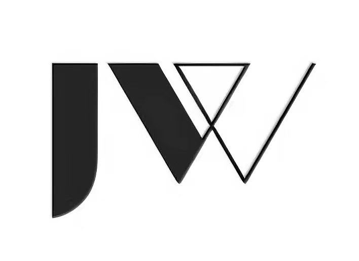

01 / 02
广东白云学院
建筑 · 设计 · 实验
广东白云学院
建筑 · 设计 · 实验
A PLACE FOR IDEAS TO BEGIN
从这里，
展开。
为做纯粹的事情的伙伴，
提供心灵驿站。
保持好奇，让想法生长。
DESIGNING SPACE
EMPOWERING LIFE
EMPOWERING LIFE
THE STUDIO, IN FRAGMENTS

简维工作室JIANWEI STUDIOA PLACE FOR IDEAS TO BEGIN
为做纯粹的事情的伙伴，
提供心灵驿站。
THE STUDIO, IN FRAGMENTS